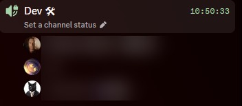
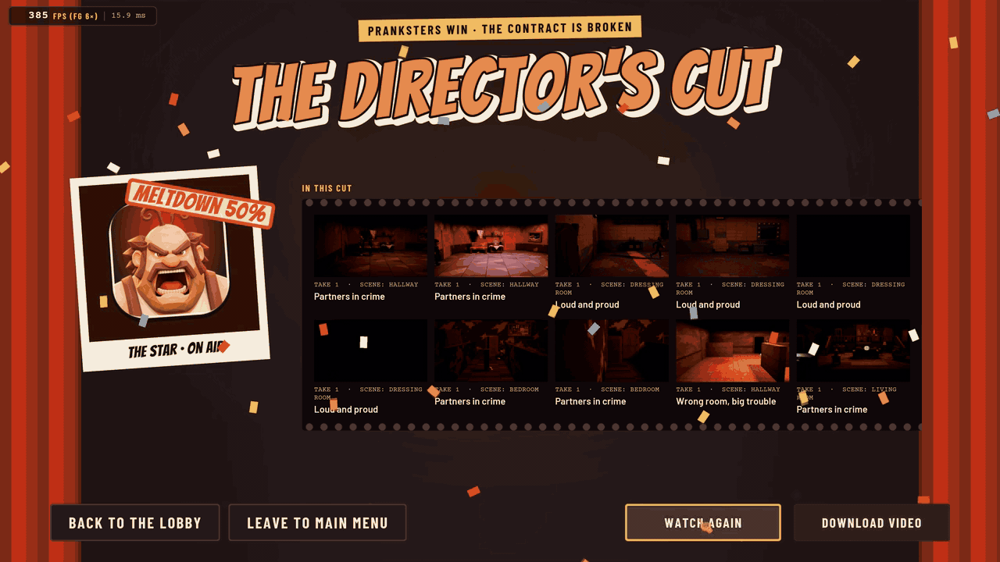
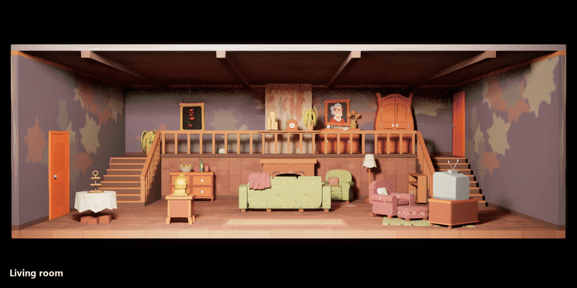

Our first house was a grid of rooms assembled from a seed. We put seats in front of it and gave the crowd something to do. A prank could get a laugh, a gasp or flowers thrown onto the set.
Then we wired the mic into movement. Your hands steer. Your voice decides how fast you go. Later, proximity chat gave the Star a chance to hear a prankster talking their way into a sprint.
Getting caught gave the rest of the crew a new job. The Star throws you in the cage, and someone has to find a key and use it to get you out.
Day’s Notes
Five open mics, five still players. In a five-player test, the room noise stayed below the threshold for movement. Holding Shift gave us the same test input every time, so we could check that all five windows agreed on where the player stopped.
An early house from the audience side. Play the clip to see the crowd react to a prank.
From greybox to studio set
The first vents went into six white rooms you could see from the seats. As the house grew, we put a wall of little windows between the audience and the action. Opening up the fronts again made it possible to follow a chase from room to room.
Vent prototype. Grilles connect rooms so pranksters can slip away.
Nov 15. All 25 rooms of the current set in one shot.
The first Director’s Cut
We wanted the director to get something out of all this sabotage. When the pranksters won, we cut from the full house to the prank that finished the match. That moment got its own film card on the results screen.
Early reel playback, from the wide shot to the prank.
The pranksters’ win screen and its first replay card.
Give the show a past
In the opening comic, the audience cheers and the director counts the money. Then we cut to “Many Years Later.” By the time the players arrive, the director wants out of his contract and the pranksters are his plan.
We darkened the space around the house and put a camera on a rail along the front. The lobby became the call sheet for this show, with each player on their own cast monitor and a clapperboard between screens.
We recorded about 30 wordless reactions ourselves. A prankster’s giggle sells the gag. A grumble from the Star can make you stop and listen before you open a door.
Day’s Notes
Five faces for one bad mood. We made five portraits for the rage meter, taking the Star from a grumble to a full scream.
The lettering came from the mockup. We rendered the browser’s tilted, two-tone headlines as title art for the game.
The opening comic in-game, with its soundtrack and the “Many Years Later” card.
Cast scale and the first cage
Line up the cast and you could spot the problem immediately. The Star was the smallest person on set. We brought him up to 185 cm, with the Boy at 175 cm and the Girl at 168 cm. Then we put four caught pranksters into four separate spots in the new cage to see if everyone fit.
The cast side by side after the scale pass.The greybox cage in the downstairs bathroom.Captured pranksters in the assembled prison.
Pranks, on set and in the reel
The portrait used to jump straight from clean to defaced. We swapped it under a cartoon fight cloud and let the damage emerge as the smoke cleared. On the results screen, you could pick a film card and watch a prank unfold again.
The cloud hides the portrait as it changes.Selecting a film card replays the computer prank.
Testing the rooms at player height
At eye level, you can see what a player will actually notice. Foam on the floor and paint on the costume tell you something happened here even if you missed the prank. We put room jumps, prank triggers and replay controls behind F3 so we could test those moments on demand.
On your first run, you learn to move with your voice, pull a prank and spring a teammate from the cage. Just after the rescue, the screen goes dark. “You Are the Star” comes up, and now you’re the one doing the catching.
We gave pranksters a map they fill in as they go. Step into a room and its type stays marked. A yellow outline tracks where you are inside a three-by-three window, even when the house is much bigger.
In the editor test, all three players loaded the same generated house, reached the Studio Cut and made it back to the call sheet for another round.
Day’s Notes
The garage set the scale. We widened the house cells from 15 to 22 metres to fit the full-size garage and its side passages.
Walking practice and listening from the wardrobe in the first-launch rehearsal.
Inside the set
The makeup room and costume room joined the rotation. Dress a mirror with lipstick or leave paint on the Star’s costume, and someone can walk in later and see the mess you left.
A bright stripe near the ceiling gave away the first bug. When the house turned a room around, its fill light still assumed the front was on the old side. Some lamps even cast shadows from inside their own shades. We aimed the lights through the open fronts and gave each room one shadow-casting key light.
Laundry shadows. The single key light gives the machines a clearer shadow on the floor.
The TV went black for guests
We compared the host and guest views from the same camera angle. The guest could see the inside faces of the TV casing. Mirroring the room had flipped the TV after the renderer decided which faces to draw. Refreshing that decision after attachment fixed it.
The path from the left door after moving the partition.
From real hands to first-person animations
We picked up an egg, a roll of toilet paper and five other props and filmed our own hands. A USB drive fits between the fingers. A toilet roll needs the whole palm. Those two grips gave us a starting point for all eleven held items. We went back for one more pass when the Girl’s thumb hid the ends of the lipstick and USB drive.
Phone footage. Left to right, toilet paper, egg, scissors, USB drive, wrench, pliers and lipstick.In the game. The Boy’s grip on the left and the Girl’s on the right.
What made it into the cut?
One exported Director’s Cut was 21 seconds of the results screen. The second showed the replay. Both came out silent. We cleared the interface for capture and recovered the match audio, so a replay can keep the players’ voices and the crowd’s reaction to the same prank.
The tutorial prison had a problem of its own. It almost washed out next to the match rooms. Giving it the same studio lights and exposure as the match brought back the shadows on the floor and bars.
Day’s Notes
Every fifth frame held twice. One recording snapped a 25 fps take onto a 30 fps timeline. Keeping each frame’s capture time removed the stutter.
A pause between syllables used to slow you down. We let movement hold its speed briefly before easing off.
We spent 15 hours and 34 minutes in the dev call. With three screens to compare, we could check who heard a sound, who saw a bug, and whether everyone made it back to the call sheet after the same take.

From the mic to the replay
Listen to the mic in the middle of a take, then hear what the Director’s Cut kept from the living-room encounter.
In the match. The microphone meter flips from Walk to Run.In the Director’s Cut. The Star walks in on the pranksters in the living room.
The cut and the set
The Director’s Cut replaying a take, and every room the house generator can build.

The Director’s Cut. Each machine replays its own take.

Every room. All sixteen modules the house is built from.